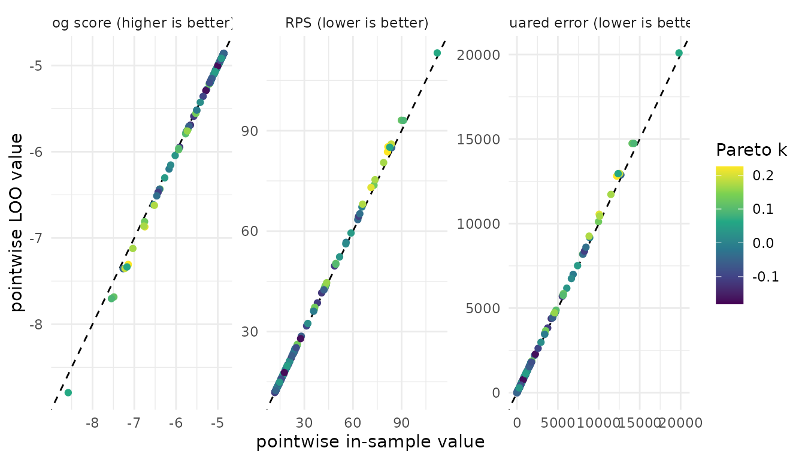
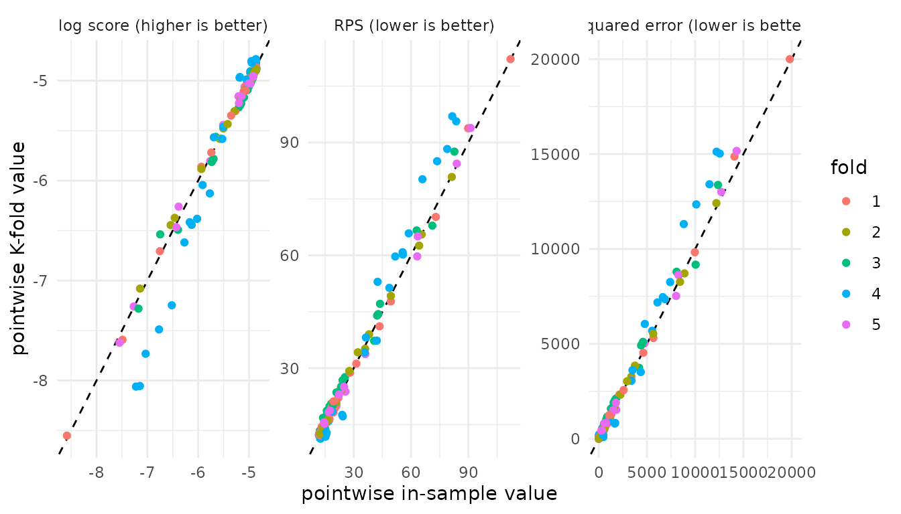
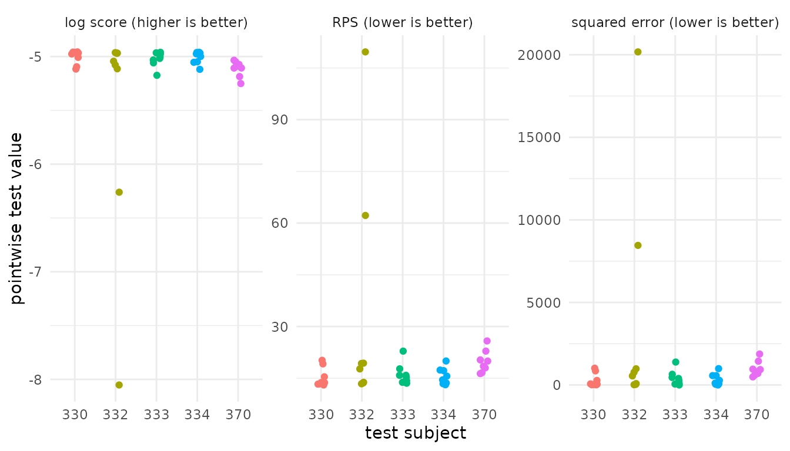
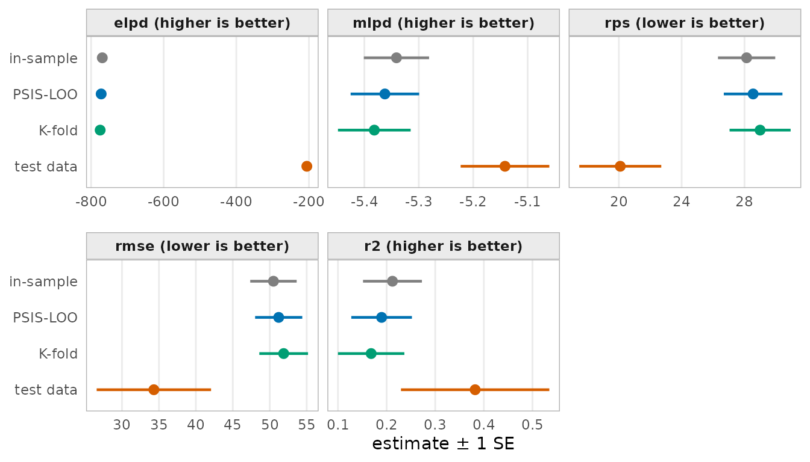

Predictive model performance: Predictive schemes with `pred_measure()`
Florence Bockting
2026-11-11
Source:vignettes/articles-online-only/pred-measure-workflow.Rmd
pred-measure-workflow.RmdIntroduction
How well does a fitted model predict data that were not used to fit it? The formula reference (Vehtari et al., 2026) divides this into three questions:
-
What counts as a good prediction? This is the
predictive measure, for example the log score or the RMSE.
- Discussed in the vignette Predictive model performance: Overview of measures
-
Which predictions are evaluated? This is the
predictive scheme. It sets the observations that train the
model before observation \(i\) is
evaluated.
- Focus of this vignette.
- How are the predictions computed? From posterior draws, from refits, or with importance weights.
What this article does not cover
- Measure definitions
- Model comparison
-
Leave-one-group-out and leave-future-out schemes.
- Any reference?
Training data and evaluation data
This vignette focuses on the predictive scheme. A predictive scheme is a rule that splits the observed data \(y = (y_1, \ldots, y_n)\) into a training set \(\mathcal{T}\) used to fit the model and an evaluation set \(\mathcal{E}\) (i.e., the observations whose predictive performance is evaluated).
Predictive schemes include:
- the special case of in-sample evaluation, where the training and test set are the same, consisting of the full data set.
- hold-out evaluation, where the data set is split into two disjoint sets: one for training and one for evaluation.
- cross-validation schemes, where the training set is a subset of the data, and the evaluation set is the remaining data. For example, in leave-one-out cross-validation, the training set is the full data set minus one observation. In K-fold cross-validation, the training set is the full data set minus one of \(K\) disjoint subsets of the data (i.e., the folds).
Overview of the predictive schemes
The predictive measure API in the loo package has one entry point for each predictive scheme:
| Scheme | Training data \(\mathcal{T}(i)\) | Evaluation data \(\mathcal{E}\) | Predictive distribution \(p^q(y_i)\) | Weights \(w_i^s\) | Entry point |
|---|---|---|---|---|---|
| in-sample | \(\{1, \ldots, n\}\) | \(\{1, \ldots, n\}\) | \(p(y_i \mid y)\) | \(1/S\) | insample_pred_measure() |
| PSIS-LOO* | \(\{1, \ldots, n\} \setminus \{i\}\) | \(\{1, \ldots, n\}\) | \(p(y_i \mid y_{-i})\) | PSIS weights | loo_pred_measure() |
| K-fold | \(\{1, \ldots, n\} \setminus \mathcal{I}_{k(i)}\) | \(\{1, \ldots, n\}\) | \(p(y_i \mid y_{-\mathcal{I}_{k(i)}})\) | \(1/S\) | kfold_pred_measure() |
| test data | \(\mathcal{R}\) | \(\mathcal{S}\) | \(p(y_i \mid y_{\mathcal{R}})\) | \(1/S\) | test_pred_measure() |
For further discussion, see the paper Predictive measures: A formula reference .
Running example
Prediction task. The sleepstudy data
(lme4) come from a study of sleep restriction (Belenky
et al., 2003). Eighteen subjects slept at most three hours each night.
The outcome y is the average reaction time (ms) of a
subject on one day. Days 0 and 1 were adaptation and training, so this
vignette keeps days 2 to 9. The predictor Days counts the
days of sleep restriction, from 0 to 7. This gives 144 observations.
library(loo) # for evaluating the predictive performance
library(brms) # for model fitting
library(lme4) # for the sleepstudy data
library(ggplot2) # for plotting
theme_set(theme_minimal())
SEED <- 42To model the data, we use a normal regression of y on
Days with no subject effects. As fitting is not the focus
of this vignette, we do not discuss the modelling step in depth but show
the code in the appendix.
For discussing the different predictive schemes, we fit the model once to the full data set and once to a subset of the data (i.e., the training data). For the test data we holdout the observations of 5 subjects.
| Object | Data | Description |
|---|---|---|
fit_full |
all 18 subjects, 144 observations | fit to full data |
fit_train |
13 subjects, 104 observations | fit to training data |
test_data |
the other 5 subjects, 40 observations | test data set |
Each fit uses the brms default of 4 chains and 2000
iterations.
Measures
To mesaure predictive performance of the model, we will use the
following measures: elpd, mlpd,
rps, rmse, and r2. See the
vignette Predictive model performance:
Overview of measures for a discussion of the measures.
Each measure requires one or more of the following inputs: the
observed values (y), the pointwise log predictive densities
(ylp), the predicted means (mupred), or draws
from the predictive distribution (ypred). The following
table shows the required inputs for each measure.
| Measure | y |
ylp |
mupred |
ypred |
|---|---|---|---|---|
elpd |
✓ | |||
mlpd |
✓ | |||
rps |
✓ | ✓ | ||
rmse |
✓ | ✓ | ||
r2 |
✓ | ✓ |
To compute the corresponding inputs we use functions from
brms.
measures <- c("elpd", "mlpd", "rps", "rmse", "r2")
y <- fit_full$data$y
ylp <- brms::log_lik(fit_full)
ypred <- brms::posterior_predict(fit_full)
mupred <- brms::posterior_epred(fit_full)Predictive schemes
In-sample
We start the discussion with the special case of using in-sample evaluations. In-sample performance evaluates the fitted model on the same data used for fitting. It should not be used to estimate predictive performance. Nevertheless, it can be useful as a reference point, and the amount of optimism relative to a cross-validation or test-data estimate can itself be informative.
Implementation
insample_sleep <- insample_pred_measure(
y = y,
ypred = ypred,
mupred = mupred,
ylp = ylp,
measures = measures
)
str(insample_sleep)
#> List of 2
#> $ estimates: num [1:5, 1:2] -769.107 -5.341 28.136 50.501 0.212 ...
#> ..- attr(*, "dimnames")=List of 2
#> .. ..$ : chr [1:5] "elpd" "mlpd" "rps" "rmse" ...
#> .. ..$ : chr [1:2] "Estimate" "SE"
#> $ pointwise: num [1:144, 1:5] -4.91 -5.2 -5.7 -7.27 -5.76 ...
#> ..- attr(*, "dimnames")=List of 2
#> .. ..$ : NULL
#> .. ..$ : chr [1:5] "elpd" "mlpd" "rps" "rmse" ...
#> - attr(*, "measure_info")=List of 5
#> ..$ elpd:List of 3
#> .. ..$ loss : logi FALSE
#> .. ..$ diff_method: chr "sum"
#> .. ..$ se_diff_fun: NULL
#> ..$ mlpd:List of 3
#> .. ..$ loss : logi FALSE
#> .. ..$ diff_method: chr "mean"
#> .. ..$ se_diff_fun: NULL
#> ..$ rps :List of 3
#> .. ..$ loss : logi TRUE
#> .. ..$ diff_method: chr "mean"
#> .. ..$ se_diff_fun: NULL
#> ..$ rmse:List of 3
#> .. ..$ loss : logi TRUE
#> .. ..$ diff_method: chr "measure_specific"
#> .. ..$ se_diff_fun: chr "rmse"
#> ..$ r2 :List of 4
#> .. ..$ loss : logi FALSE
#> .. ..$ diff_method: chr "measure_specific"
#> .. ..$ se_diff_fun: chr "r2"
#> .. ..$ extra :List of 1
#> .. .. ..$ mse_y_i: num [1:144] 3271 181 2387 11385 5507 ...
#> - attr(*, "dims")= int [1:2] 4000 144
#> - attr(*, "class")= chr [1:2] "insample_pred_measure" "pred_measure"
#> - attr(*, "source")= chr "insample"Result The returned structure of the
pred_measure class includes the $estimates and
$pointwise components per selected measure. Furthermore,
the following attributes are included in the result:
-
measure_info: a list with entries for each measure with respective additional information -
dims: provides the dimensions of the data used for evaluation. -
class: indicates the class of the result, here"pred_measure"and"insample_pred_measure". -
source: indicates the predictive scheme used, here"insample".
The corresponding print method shows the estimates and standard errors for each measure, as well as the number of observations used for evaluation.
insample_sleep
#>
#> Computed from 4000 posterior draws and 144 observations.
#> Data source: in-sample
#>
#> Estimate SE
#> elpd -769.1 8.6
#> mlpd -5.341 0.060
#> rps 28.1 1.8
#> rmse 50.5 3.1
#> r2 0.212 0.061PSIS-LOO
Next, we focus on the leave-one-out cross-validation (LOO) scheme, specifically using Pareto-smoothed importance sampling (PSIS) to approximate the LOO predictive performance. While exact leave-one-out cross-validation needs one refit for each observation, PSIS-LOO uses the draws of the full-data fit instead. PSIS-LOO then weights the draws with Pareto-smoothed importance weights, so that each \(y_i\) is scored as if it was left out (Vehtari et al., 2024).
Implementation We first compute the PSIS-LOO object
using brms::loo() and then pass it to
loo_pred_measure(). Otherwise, the input structure is the
same as for the in-sample evaluation.
loo_sleep <- brms::loo(fit_full, save_psis = TRUE)
loo_sleep_measure <- loo_pred_measure(
loo = loo_sleep,
y = y,
ypred = ypred,
mupred = mupred,
measures = measures
)
loo_sleep_measure
#>
#> Computed from 4000 posterior draws and 144 observations.
#> Data source: loo
#>
#> Estimate SE
#> elpd_loo -772.2 9.1
#> p_loo 3.1 0.5
#> mlpd_loo -5.362 0.063
#> rps_loo 28.6 1.9
#> rmse_loo 51.2 3.2
#> r2_loo 0.190 0.062
#> ------
#>
#> All Pareto k estimates are good (k < 0.7).Result Compared to the in-sample evaluation, the
rows now have the suffix _loo. The measure
elpd also adds automatically p_loo, the
difference between the in-sample and the LOO log score (Vehtari et al.,
2026).
The output structure of the loo_pred_measure class
includes two additional components compared to the
insample_pred_measure class:
-
$diagnostics: includingpareto_k, the Pareto \(\hat k\) values for each observation, and (relative) effective sample size,n_effandr_eff. -
$log_weights: the log PSIS weights.
names(loo_sleep_measure)
#> [1] "estimates" "pointwise" "diagnostics" "log_weights"Plot The following plot compares the in-sample and
LOO scores for three measures: the log score, the RPS, and the squared
error. Each point is one observation. The x-axis shows the in-sample
value, and the y-axis the LOO value. The color shows the Pareto \(\hat k\). We do not show mlpd
and r2 as their pointwise values are the same as those of
elpd and rmse.

The log score is a utility (higher is better). The RPS and the squared error are losses (lower is better). Thus, an observation that is harder to predict when it is left out lies below the diagonal for the log score, but above the diagonal for the RPS and the squared error. The farther a point lies from the diagonal, the more the observation influences the posterior. Such observations often have a high Pareto \(\hat k\). The color lets you check whether an influential observation moves away from the diagonal for all measures or only for some.
K-fold
Next, we focus on K-fold cross-validation. The data are split into \(K\) folds. The model is fit once for each fold, without the observations in that fold. This needs \(K\) fits, not \(n\).
Implementation The loo package does
not refit the model but this can be done with
brms::kfold(). Set save_fits = TRUE. Without
the fits, brms::kfold_predict() cannot compute the held-out
draws: method = "predict" gives ypred, and
method = "fitted" gives mupred.
set.seed(SEED)
kfold_sleep <- brms::kfold(fit_full, K = 5, save_fits = TRUE)
ypred_kfold <- brms::kfold_predict(kfold_sleep, method = "predict")$yrep
mupred_kfold <- brms::kfold_predict(kfold_sleep, method = "fitted")$yrepWe then pass the K-fold object to kfold_pred_measure().
Otherwise, the input structure is the same as for the previous
examples.
kfold_sleep_measure <- kfold_pred_measure(
y = y,
ypred = ypred_kfold,
mupred = mupred_kfold,
kfold = kfold_sleep,
measures = measures
)
kfold_sleep_measure
#>
#> Computed from 4000 posterior draws and 144 observations.
#> Data source: k-fold
#>
#> Estimate SE
#> elpd_kfold -775.0 9.6
#> p_kfold 5.9 2.0
#> mlpd_kfold -5.382 0.067
#> rps_kfold 29.0 1.9
#> rmse_kfold 51.9 3.3
#> r2_kfold 0.168 0.068Result The rows in the result object now have the
suffix _kfold. The measure elpd also adds
p_kfold, the difference between the in-sample and the
K-fold log score.
The output structure of the kfold_pred_measure class
copies the attributes K, folds,
fold_type, joint, yhash, and
model_name from the kfold object. It has
$diagnostics only when the kfold object has
them. K-fold uses no importance weights, so there is no
$log_weights component as in the case of PSIS-LOO.
names(kfold_sleep_measure)
#> [1] "estimates" "pointwise" "diagnostics"Plot The following plot compares the in-sample and K-fold values for the three measures. Each point is one observation. The color shows the fold of each observation.

The direction of the diagonal is the same as in the PSIS-LOO plot. With \(K = 5\), each fit uses about 80% of the data. Thus K-fold and PSIS-LOO answer a similar question. Each K-fold fit has less data than a LOO fit, so the K-fold estimates are often slightly worse.
brms::kfold() also accepts
folds = "grouped" with group = "Subject". Then
each fold holds out whole subjects, and the predictive question changes
to new subjects.
Test data
Finally, we focus on the test data scheme, where the data is split into two disjoint sets, a training and a test set. The model is fit only to the training set. It then predicts the test set, which it did not see. For the current example, we hold out five subjects. This gives 40 test observations.
Implementation We compute the draws of
fit_train at test_data with
newdata. Pass the log densities of the test observations as
ylp_test, not as ylp. The measures
elpd, mlpd, and ic need
ylp_test.
ypred_test <- brms::posterior_predict(fit_train, newdata = test_data)
mupred_test <- brms::posterior_epred(fit_train, newdata = test_data)
ylp_test <- brms::log_lik(fit_train, newdata = test_data)
test_sleep_measure <- test_pred_measure(
y = test_data$y,
ypred = ypred_test,
mupred = mupred_test,
ylp_test = ylp_test,
measures = measures
)
test_sleep_measure
#>
#> Computed from 4000 posterior draws and 40 observations.
#> Data source: test
#>
#> Estimate SE
#> elpd_test -205.7 3.3
#> mlpd_test -5.142 0.081
#> rps_test 20.1 2.6
#> rmse_test 34.3 7.7
#> r2_test 0.382 0.153Result The rows in the result object now have the
suffix _test. The attribute dims gives the
size of the test set, 40 observations, not the size of the training set.
The output has only $estimates and
$pointwise.
names(test_sleep_measure)
#> [1] "estimates" "pointwise"Plot The test observations are not in the training data. Thus there is no in-sample value. The following plot shows the pointwise test values on the y-axis for each of the five test subjects on the x-axis.

The test set holds five subjects that the model did not see. The plot shows whether one subject controls the estimate. The test set is small, so the standard errors are larger than in the other schemes. A different split can give a different estimate.
Comparison of predictive schemes
All four schemes use the same model and the same measures. They differ in the predictive question. The plot shows the estimate and \(\pm 1\) standard error for each scheme and measure.
elpd is a sum over the evaluation data (Vehtari et al.,
2026, Eq. 2.7). The test set has 40 observations, and the other schemes
have 144. Thus do not compare the elpd of the test data
with the other schemes. Use mlpd for this comparison.

In-sample, PSIS-LOO, and K-fold score the same 144 observations. The in-sample estimate is the most optimistic, because the model has seen each \(y_i\). PSIS-LOO and K-fold ask a similar question, so their estimates are close. The test data score five new subjects. The interval of the test data is wider, because the test set has only 40 observations. One split is noisy. A different split can move the estimate to the other side of PSIS-LOO.
Add measures to an existing result
Besides the four scheme functions, the pred_measure()
function adds measures to an object of class pred_measure.
It takes the predictive scheme from the result, for example
kfold, and adds new measures to the result object. If a
requested measure is already stored, pred_measure() warns
and skips it.
For example, we first compute only elpd with
PSIS-LOO.
loo_elpd <- loo_pred_measure(
loo = loo_sleep, measures = "elpd", save_psis = TRUE
)
loo_elpd
#>
#> Computed from 4000 posterior draws and 144 observations.
#> Data source: loo
#>
#> Estimate SE
#> elpd_loo -772.2 9.1
#> p_loo 3.1 0.5
#> ------
#>
#> All Pareto k estimates are good (k < 0.7).And decide then that we want to add further measures to the output.
We can do that using pred_measure() and provide the
additional measures with their required input:
pred_measure(
y = y,
mupred = mupred,
predperf = loo_elpd,
measures = c("mae", "rmse")
)
#>
#> Computed from 4000 posterior draws and 144 observations.
#> Data source: loo
#>
#> Estimate SE
#> elpd_loo -772.2 9.1
#> p_loo 3.1 0.5
#> mae_loo 39.1 2.8
#> rmse_loo 51.2 3.2
#> ------
#>
#> All Pareto k estimates are good (k < 0.7).Custom measures
The argument measures also accepts functions. Use them
to define custom measures. A custom function must follow three
rules:
-
Arguments. Name the arguments from
y,ypred,mupred,ylp, andlog_weights. loo maps the inputs by these names. -
Weights.
log_weightsholds the PSIS weights for PSIS-LOO. In the other schemes it isNULL. A function that ignoreslog_weightsgives in-sample values under PSIS-LOO. -
Return value. Return a list with
estimate,se, andpointwise.
After you construct the custom function, wrap it in
custom_measure(), which sets the name, whether the measure
is a loss (lower is better) or a utility, and how
model_compare() computes the standard error of a difference
(se_diff_fun). The default is a utility (higher is better).
If you do not give se_diff_fun,
model_compare() reports an NA standard
error.
Example. The coverage of the central 90% predictive interval is the proportion of observations inside that interval. For a calibrated model, it is close to 0.9. Observation \(i\) is inside the interval when its probability integral transform lies between 0.05 and 0.95:
\[ \text{pit}_i = \sum_{s=1}^S w_i^s\, \mathbb{1}\{\tilde y_i^s \le y_i\}, \qquad \text{cover}_i = \mathbb{1}\{0.05 < \text{pit}_i \le 0.95\} . \]
coverage <- function(y, ypred, log_weights = NULL, prob = 0.9) {
if (is.null(log_weights)) {
log_weights <- matrix(-log(nrow(ypred)), nrow(ypred), ncol(ypred))
}
w <- exp(sweep(log_weights, 2, matrixStats::colLogSumExps(log_weights)))
pit <- colSums(w * sweep(ypred, 2, y, "<="))
alpha <- 1 - prob
cover_i <- as.numeric(pit > alpha / 2 & pit <= 1 - alpha / 2)
list(
estimate = mean(cover_i),
se = sqrt(var(cover_i) / length(cover_i)),
pointwise = cover_i
)
}The same function works in every scheme:
cover90 <- custom_measure(coverage, name = "cover90", se_diff_fun = "mean")
insample_pred_measure(
y = y,
ypred = ypred,
measures = list("rps", cover90 = cover90)
)
#>
#> Data source: in-sample
#>
#> Estimate SE
#> rps 28.1 1.8
#> cover90 0.868 0.028
loo_pred_measure(
loo = loo_sleep,
y = y,
ypred = ypred,
measures = list("rps", cover90 = cover90)
)
#>
#> Computed from 4000 posterior draws and 144 observations.
#> Data source: loo
#>
#> Estimate SE
#> rps_loo 28.6 1.9
#> cover90_loo 0.868 0.028
#> ------
#>
#> All Pareto k estimates are good (k < 0.7).References
Belenky, G., Wesensten, N. J., Thorne, D. R., et al. (2003). Patterns of performance degradation and restoration during sleep restriction and subsequent recovery: A sleep dose-response study. Journal of Sleep Research, 12(1):1–12.
Paananen, T., Piironen, J., Bürkner, P.-C., and Vehtari, A. (2021). Implicitly adaptive importance sampling. Statistics and Computing, 31(2):16.
Silva, L. and Zanella, G. (2022). Robust leave-one-out cross-validation for high-dimensional Bayesian models. Preprint at arXiv:2209.09190.
Vehtari, A., Axen, S., Weber, F., and Bockting, F. (2026). Predictive measures and model comparison in the loo package: A formula reference. [TODO: arXiv ID]
Vehtari, A., Gelman, A., and Gabry, J. (2017). Practical Bayesian model evaluation using leave-one-out cross-validation and WAIC. Statistics and Computing, 27(5):1413–1432. doi:10.1007/s11222-016-9696-4
Vehtari, A., Simpson, D., Gelman, A., Yao, Y., and Gabry, J. (2024). Pareto smoothed importance sampling. Journal of Machine Learning Research, 25(72):1–58.
Appendix: model code
set.seed(SEED)
data("sleepstudy", package = "lme4")
sleepstudy <- subset(sleepstudy, Days >= 2)
sleepstudy$Days <- sleepstudy$Days - 2
sleepstudy$y <- sleepstudy$Reaction
prior_sleep <- brms::prior(normal(200, 100), class = b, coef = "Intercept") +
brms::prior(normal(0, 20), class = b, coef = "Days") +
brms::prior(exponential(0.02), class = sigma)
# all subjects
fit_full <- brms::brm(
y ~ 0 + Intercept + Days,
data = sleepstudy,
family = gaussian(),
prior = prior_sleep,
seed = SEED,
refresh = 0
)
# five subjects held out as test data
test_subjects <- sample(unique(sleepstudy$Subject), size = 5)
train_data <- subset(sleepstudy, !Subject %in% test_subjects)
test_data <- subset(sleepstudy, Subject %in% test_subjects)
fit_train <- update(
fit_full, newdata = train_data, seed = SEED, refresh = 0
)